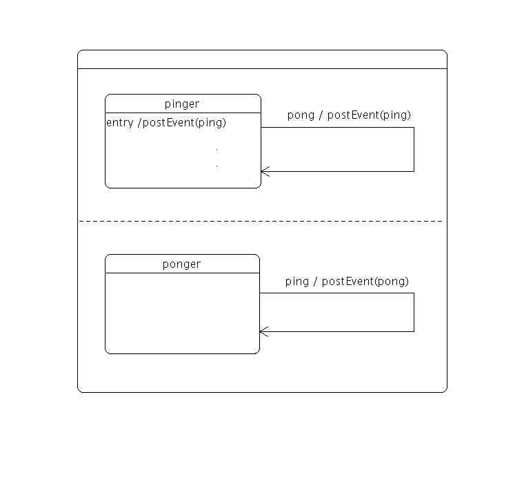

Ping Pong States
The Ping Pong States example shows how to use parallel states together with custom events and transitions in Qt State Machine Framework.
This example implements a statechart where two states communicate by posting events to the state machine. The state chart looks as follows:

The pinger and ponger states are parallel states, i.e. they are entered simultaneously and will take transitions independently of each other.
The pinger state will post the first ping event upon entry; the ponger state will respond by posting a pong event; this will cause the pinger state to post a new ping event; and so on.
class PingEvent : public QEvent { public: PingEvent() : QEvent(PingEventType) { } }; class PongEvent : public QEvent { public: PongEvent() : QEvent(PongEventType) { } };
Two custom events are defined, PingEvent and PongEvent.
class Pinger : public QState { public: explicit Pinger(QState *parent) : QState(parent) { } protected: void onEntry(QEvent *) override { machine()->postEvent(new PingEvent); qInfo() << "ping?"; } };
The Pinger class defines a state that posts a PingEvent to the state machine when the state is entered.
class PingTransition : public QAbstractTransition { public: PingTransition() {} protected: bool eventTest(QEvent *e) override { return e->type() == PingEventType; } void onTransition(QEvent *) override { machine()->postDelayedEvent(new PongEvent, 500); qInfo() << "pong!"; } };
The PingTransition class defines a transition that is triggered by events of type PingEvent, and that posts a PongEvent (with a delay of 500 milliseconds) to the state machine when the transition is triggered.
class PongTransition : public QAbstractTransition { public: PongTransition() {} protected: bool eventTest(QEvent *e) override { return (e->type() == PingEventType); } void onTransition(QEvent *) override { machine()->postDelayedEvent(new PingEvent, 500); qInfo() << "ping?"; } };
The PongTransition class defines a transition that is triggered by events of type PongEvent, and that posts a PingEvent (with a delay of 500 milliseconds) to the state machine when the transition is triggered.
int main(int argc, char **argv) { QCoreApplication app(argc, argv); QStateMachine machine; auto group = new QState(QState::ParallelStates); group->setObjectName("group");
The main() function begins by creating a state machine and a parallel state group.
auto pinger = new Pinger(group);
pinger->setObjectName("pinger");
pinger->addTransition(new PongTransition);
auto ponger = new QState(group);
ponger->setObjectName("ponger");
ponger->addTransition(new PingTransition);
Next, the pinger and ponger states are created, with the parallel state group as their parent state. Note that the transitions are targetless. When such a transition is triggered, the source state won't be exited and re-entered; only the transition's onTransition() function will be called, and the state machine's configuration will remain the same, which is precisely what we want in this case.
machine.addState(group);
machine.setInitialState(group);
machine.start();
return app.exec();
}
Finally, the group is added to the state machine, the machine is started, and the application event loop is entered.